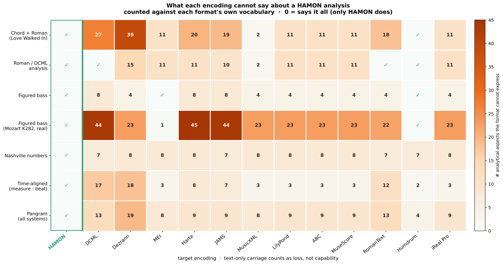

Bridging harmonic representations through a multi-modal encoding
Presented at
ICCCM 2026
Each example is authored in HAMON and exported to every encoding using only that encoding's native constructs. What a format cannot natively express is really lost — unless a clearly-labelled out-of-band HAMON annotation carries it. Only HAMON keeps everything.
How to read this page. The loss is measured against each format's native capability —
what it can legitimately encode — not by smuggling the HAMON string into a text field.
In Native mode a format carries only its own constructs, so the analytical layer it can't
express (applied dominants, chord-scales, key context…) is genuinely lost. In Native + HAMON
mode we add a clearly-labelled out-of-band HAMON annotation (a comment, an MEI
<annot>, a sidecar field) that carries the full surface — so the loss drops to
zero, except in formats that have no such slot (Harte .lab, iReal), which
stay lossy. All of this is text, from the Python reference hamonpy + the
capability model in site/native.py. The engraved score is illustrative only
(music21 → Verovio, CDN); when it can't render it is omitted — a display limitation,
not a HAMON loss.

Interactive loss viewer
Pick an example: you get the piece, the bars we take, and the engraved score. The encodings that fit that analysis are shown as tabs (with their native loss); the ones that can't express it get a short explanation instead. Toggle Native vs Native + HAMON to see what a clearly-labelled out-of-band annotation recovers.